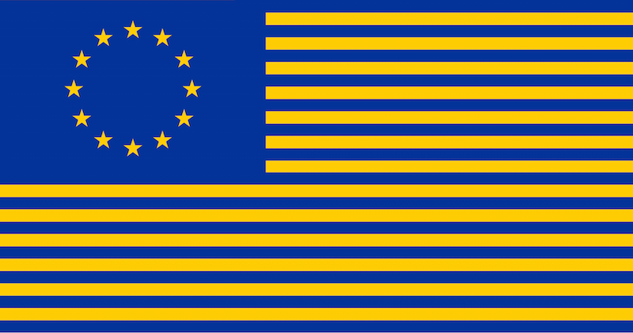

A United States of Europe

There’s a good chance that you’re fairly acquainted with the situation in Greece right now. If not, here’s a short summary: Last Tuesday, Greece defaulted on a €1.6bn IMF loan. Today, the Greek citizens voted “NO” during a national referendum (public vote) on whether or not to accept a new debt restructuring deal from the EU, pushing the latest German and French offer off of the negotiating table.
The rejection of the latest austerity plan spells trouble for Greece. EU politicians, who are being held accountable for the repayment of the largely German, French, and Italian government-owned Greek debt, have a momentous decision to make: do they (1) offer another deal that is more favorable to Greece, showing signs of weakness that might be exploited by other debtor countries within the EU, or (2) simply walk away from table and watch Greece withdraw from the Eurozone, implement a new currency, and attempt to turn its terrible economic situation around without access to most (if not all) of the world’s largest credit markets?
Neither of these options are great for either party. How did Greece get to this point? What is the solution? How can we prevent this from happening again?
I want to examine a comment made by Yanis Varoufakis, Finance Minister of Greece and central figure in the debt debacle, that addresses these questions on a very high level.
There is no doubt that if we had a Federal Republic - if we had a United States of Europe - we would not be here, discussing the Greek crisis, the Eurozone crisis, banking unions, or anything of the sort. I think most Europeans would agree with this, and most Europeans would want to live in a United States of Europe.1
Now I want to tell you why this is wrong.
[1/4]